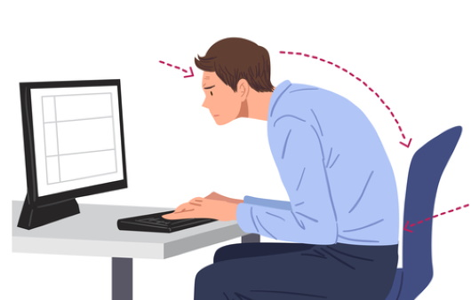
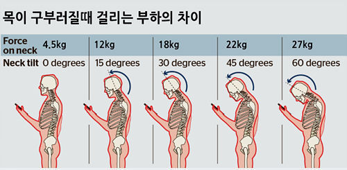
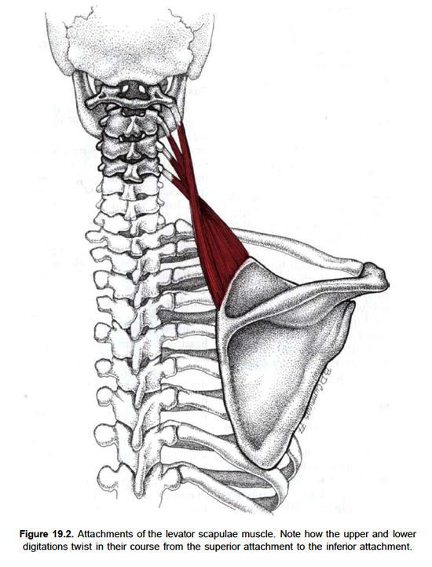

한 예능에서 도쿄 올림픽에서 금의환향한 선수들이 나와 '직업병’에 대해 이야기 합니다. 역시 직업병 없는 직업은 없나봅니다. 그걸 보니까 개발자에게도 직업병이 뭘까 생각해보게 됐어요. 문득 회사 입사 후 처음으로 들어간 프로젝트에서, 한 선배가 잦은 야근으로 디스크가 터진 걸 이야기하던 모습이 생각납니다. 일하다 아픈 것만큼 서러운 게 없는데, 마치 무용담처럼 이야기했었죠. 내년이면 개발자 10년 차가 되는 저 또한 목이 안 좋습니다. 목 디스크까진 아니지만 심한 거북목입니다.

다른 사무직도 비슷하겠지만, 개발자는 컴퓨터 앞에 장시간 앉아서 집중해야 합니다. 그러다 보면 자세가 무너지기 마련입니다. 저는 집중하게 되면 모니터를 자세히 보느라 고개를 앞으로 내미는 성향이라 언젠가부터 자연스레 거북목이 되었습니다. 거북목이 되면 어깨가 단단히 뭉쳐서 올라가고, 몸이 굽으면서 상대적으로 배가 나와 보이게 되죠. 그래서 주위 사람들이 저보고 왜 그렇게 배가 나왔냐고 하더라구요. 분명 화장실 거울로 봤을 땐 배가 전혀 안 나왔는데 말이죠. 배는 둘째치고 주기적으로 편두통이 왔습니다. 관자놀이가 지끈지끈 아픈 날이면 일상생활이 어려워 두통약을 먹기 일쑤였습니다.
이런 두통이 점점 심해지자 계속 방치할 수가 없었습니다. 헬스도 나름 해봤지만, 거북목이 획기적으로 좋아지진 않더라구요, 그래서 부인이랑 듀엣으로 자세 교정에 좋다는 필라테스를 다니기 시작했습니다. 처음 목표는 자세 교정과 근력 향상이었으나, 3개월이 지나면서 제 운동은 점점 재활 운동 내지는 물리치료가 되어가고 있었습니다. 집이나 사무실에서 할 수 있는 스트레칭도 많이 배워서 틈틈이 했지만, 그것만으로는 분명 한계가 있었습니다. 결국 선생님은 운동과 병행해서 한의원에서 침을 맞는 것을 추천해주셨죠. 사실 저는 한의원에 거의 가보지 않았지만 제가 신뢰하는 선생님의 말씀을 따르기로 했습니다.
점심시간에 회사 근처 한의원에 갔습니다. 침을 정말 잘 놓는다고 사내 게시판에서 추천이 많은 곳이었어요. 접수할 때 목과 어깨가 아프다고 말해놨으니, 침이나 빨리 맞고 돌아가야겠다는 생각이었습니다. 그런데 진료실에 들어가니, 원장님은 인사가 끝나기도 전에 나에게 묵직한 뭔가를 쥐여주셨어요. 나중에 보니 의료기기 같은 것이었는데, 처음엔 이게 뭔가 싶어서 어리둥절한 사이 원장님은 설명을 시작했습니다.
이 상당히 무거운 게 머리고, 들고 있는 손목이 목이다. 이 묵직한 머리를 목 근육이 지탱하고 있는 거다. 중심을 잘 잡고 있으면 그렇게 무겁지 않은데, 이걸 앞으로 숙여버리면 목 근육에 부하가 엄청나게 늘어난다.

확실히 그냥 들고 있는 것과 손을 앞으로 숙인 것과는 차이가 컸습니다. 당연한 이야기였는데, 실제로 느끼니까 그냥 말로 듣는 것보다 확실히 뇌리에 박혔습니다. 이게 진짜 효과가 큰 게, 그 이후로 핸드폰을 하거나 컴퓨터를 할 때 고개가 앞으로 숙여서 목에 부하가 가면 꼭 이 장면이 생각나더라구요.

그 이후로도 원장님의 열성적인 설명이 한창이나 계속되었습니다. 머리가 지끈거리는 이유는 '견갑거근’이라는 근육이 뭉쳐서 그런 거라고 하더군요. 이 근육은 목 끝과 어깨를 이어주는 근육인데, 이게 뭉치게 되면 어깨가 치솟고 두통이 생긴다고 합니다. 이 근육을 잘 풀어주고 부하가 가지 않도록 생활습관을 바꿔야 합니다. 컴퓨터나 핸드폰을 할 때 고개를 절대 숙이지 말 것, 그리고 사무실에서 모니터의 높이를 높이고 위치를 정중앙으로 놓을 것. 자리에 앉을 때는 골반의 위치를 조정하고 허리 위로는 힘을 쫙 푼 상태여야 하고, 목은 중심을 잘 잡은 상태여야 합니다.
주의할 점이 또 있었는데, 거북목을 바로잡는다고 턱을 억지로 밀어 넣어서 두 턱을 만들듯이 하면 오히려 목에 반대 방향으로 무리가 간다고 합니다. 고개는 적당히 든 상태가 좋습니다. 굽은 어깨를 편다고 가슴을 억지로 내밀게 되면 오히려 목은 앞으로 빠지는 모양이 된다고 하시더라구요. 스트레칭한답시고 고개를 빙글빙글 돌리는 것도 좋지 않다고 합니다. 무거운 볼링공을 위로 들고 손목을 이리저리 돌리면 손목이 어떻게 되겠냐고 하시더군요. 모두 제가 평소에 자주 하는 행동이라 뜨끔했습니다.
사실 이 직업을 그만두고 컴퓨터와 핸드폰을 멀리하는 게 가장 효과가 좋을 것 같긴 합니다. 그게 안 되니까 문제겠지만요. 요즘은 침도 맞으러 다니고, 운동도 하고, 사무실이나 집에서 꼬박꼬박 스트레칭도 하면서 많이 좋아졌습니다. 거북목 자세도 나아졌고 배도 들어갔습니다. 무엇보다도 목과 어깨가 '편하다’는 느낌이 참 좋습니다. 물론 조금만 방심하면 금세 목을 빼고 있는 제 모습을 발견하기도 합니다. 이 직업을 계속하는 한, 꾸준히 관리할 수밖에 없겠죠. 저처럼 거북목과 두통에 시달리시는 분들이라면 도움이 되었으면 합니다.